2022 Advanced Higher Computing Science questions
Source: Scottish Qualifications Authority (SQA) / Qualifications Scotland. This is a StemInteract HTML companion, not an official HTML edition. Selectable text is supplied alongside original page images. Use the images or original PDF for equations, powers, fractions, vector notation, tables and diagrams; text extraction cannot fully preserve mathematical layout.
Jump to a question
PDF page 1
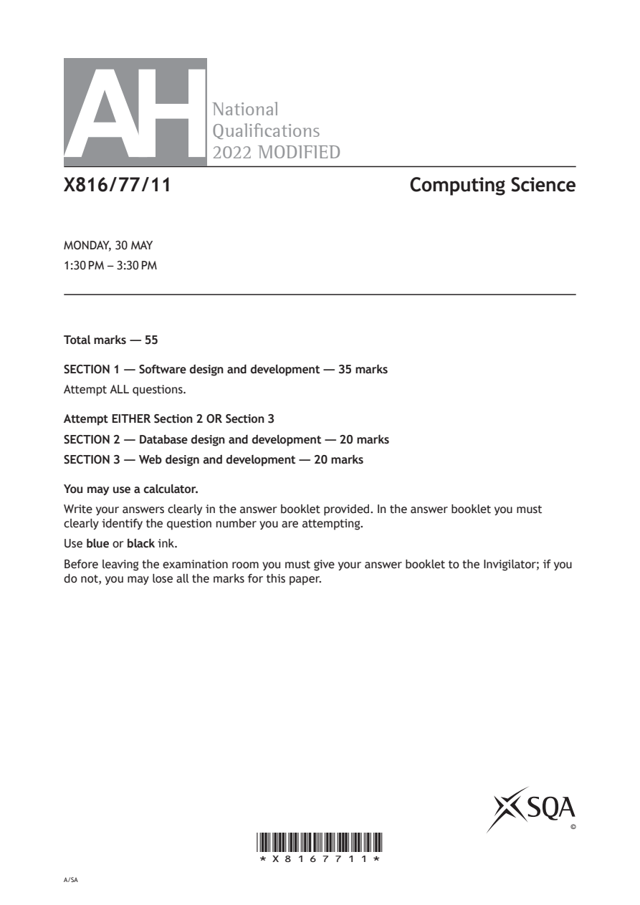
Selectable page text
AH
National
Qualications
2022 MODIFIED
X816/77/11 Computing Science
MONDAY, 30 MAY
1:30 PM – 3:30 PM
Total marks — 55
SECTION 1 — Software design and development — 35 marks
Attempt ALL questions.
Attempt EITHER Section 2 OR Section 3
SECTION 2 — Database design and development — 20 marks
SECTION 3 — Web design and development — 20 marks
You may use a calculator.
Write your answers clearly in the answer booklet provided. In the answer booklet you must
clearly identify the question number you are attempting.
Use blue or black ink.
Before leaving the examination room you must give your answer booklet to the Invigilator; if you
do not, you may lose all the marks for this paper.
©
*X8167711*
A/SAPDF page 2
Question 1Question 2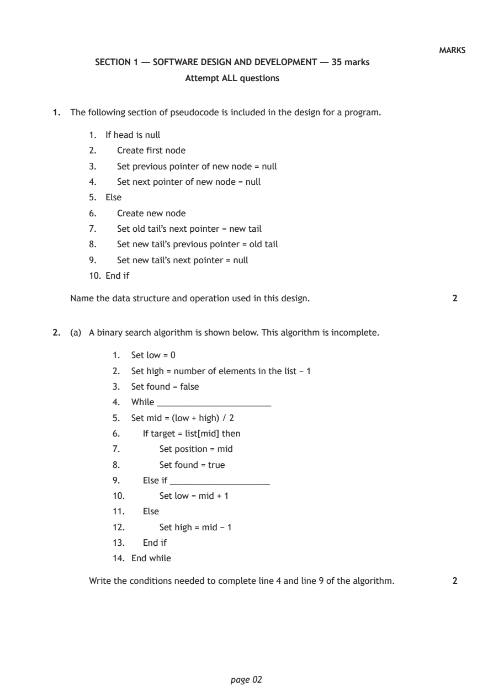
Selectable page text
MARKS
SECTION 1 — SOFTWARE DESIGN AND DEVELOPMENT — 35 marks
Attempt ALL questions
1. The following section of pseudocode is included in the design for a program.
1. If head is null
2. Create first node
3. Set previous pointer of new node = null
4. Set next pointer of new node = null
5. Else
6. Create new node
7. Set old tail’s next pointer = new tail
8. Set new tail’s previous pointer = old tail
9. Set new tail’s next pointer = null
10. End if
Name the data structure and operation used in this design. 2
2. (a) A binary search algorithm is shown below. This algorithm is incomplete.
1. Set low = 0
2. Set high = number of elements in the list − 1
3. Set found = false
4. While ________________________
5. Set mid = (low + high) / 2
6. If target = list[mid] then
7. Set position = mid
8. Set found = true
9. Else if _____________________
10. Set low = mid + 1
11. Else
12. Set high = mid − 1
13. End if
14. End while
Write the conditions needed to complete line 4 and line 9 of the algorithm. 2
page 02PDF page 3
Question 3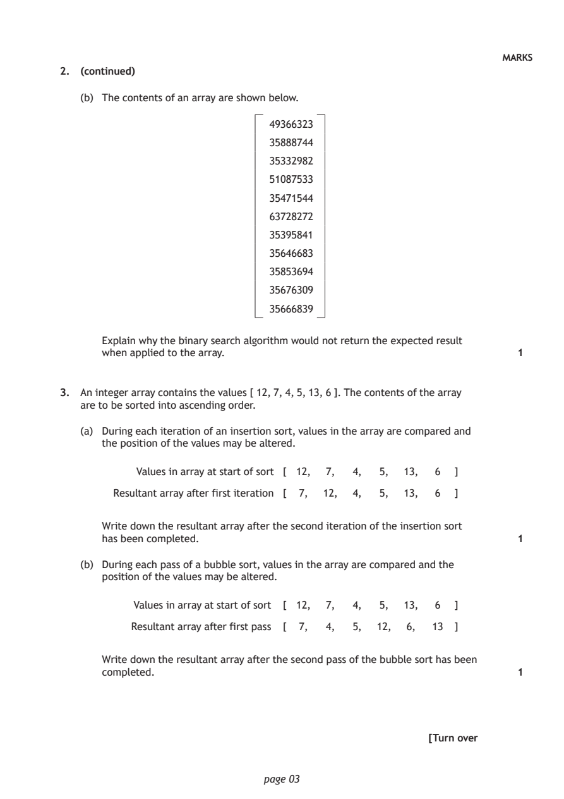
Selectable page text
MARKS
2. (continued)
(b) The contents of an array are shown below.
49366323
35888744
35332982
51087533
35471544
63728272
35395841
35646683
35853694
35676309
35666839
Explain why the binary search algorithm would not return the expected result
when applied to the array. 1
3. An integer array contains the values [ 12, 7, 4, 5, 13, 6 ]. The contents of the array
are to be sorted into ascending order.
(a) During each iteration of an insertion sort, values in the array are compared and
the position of the values may be altered.
Values in array at start of sort [ 12, 7, 4, 5, 13, 6 ]
Resultant array after first iteration [ 7, 12, 4, 5, 13, 6 ]
Write down the resultant array after the second iteration of the insertion sort
has been completed. 1
(b) During each pass of a bubble sort, values in the array are compared and the
position of the values may be altered.
Values in array at start of sort [ 12, 7, 4, 5, 13, 6 ]
Resultant array after first pass [ 7, 4, 5, 12, 6, 13 ]
Write down the resultant array after the second pass of the bubble sort has been
completed. 1
[Turn over
page 03PDF page 4
Question 4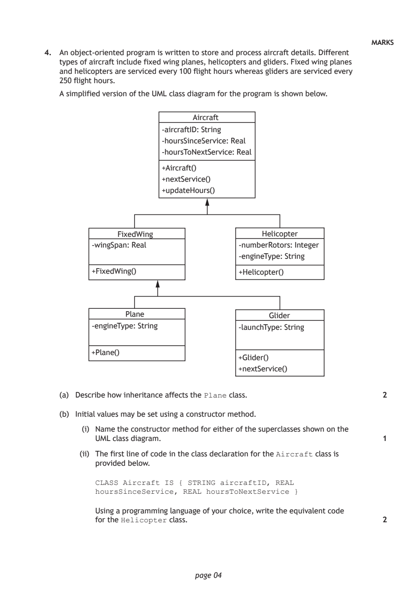
Selectable page text
MARKS
4. An object‑oriented program is written to store and process aircraft details. Different
types of aircraft include fixed wing planes, helicopters and gliders. Fixed wing planes
and helicopters are serviced every 100 flight hours whereas gliders are serviced every
250 flight hours.
A simplified version of the UML class diagram for the program is shown below.
Aircraft
‑aircraftID: String
‑hoursSinceService: Real
‑hoursToNextService: Real
+Aircraft()
+nextService()
+updateHours()
FixedWing Helicopter
‑wingSpan: Real ‑numberRotors: Integer
‑engineType: String
+FixedWing() +Helicopter()
Plane Glider
‑engineType: String ‑launchType: String
+Plane()
+Glider()
+nextService()
(a) Describe how inheritance affects the class. 2
Plane
(b) Initial values may be set using a constructor method.
(i) Name the constructor method for either of the superclasses shown on the
UML class diagram. 1
(ii) The first line of code in the class declaration for the class is
Aircraft
provided below.
CLASS Aircraft IS { STRING aircraftID, REAL
hoursSinceService, REAL hoursToNextService }
Using a programming language of your choice, write the equivalent code
for the class. 2
Helicopter
page 04PDF page 5
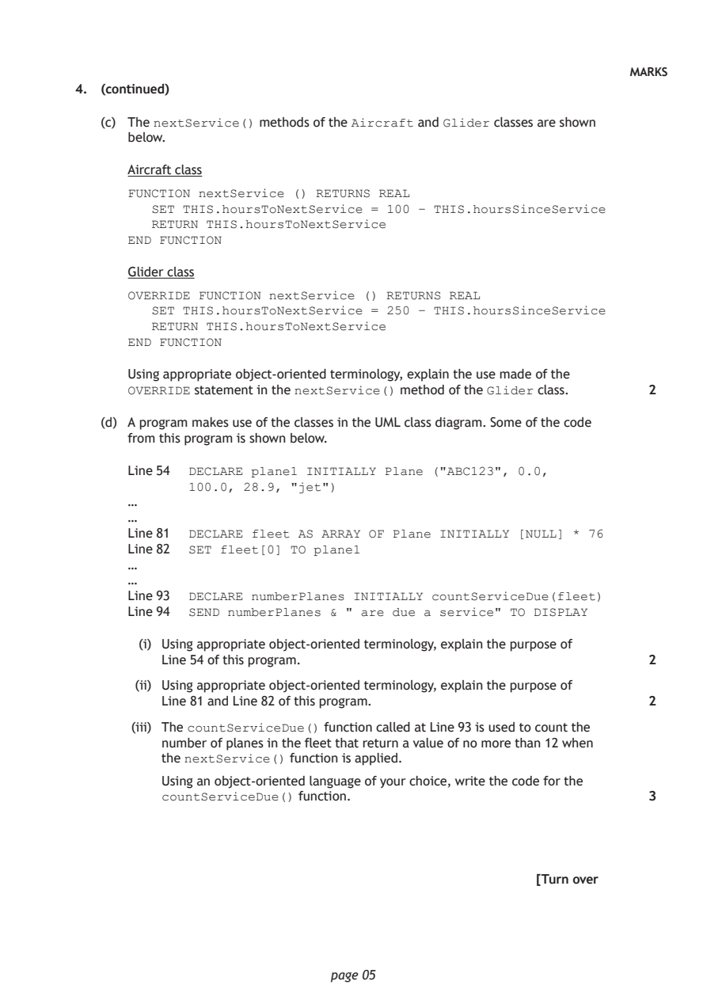
Selectable page text
MARKS
4. (continued)
(c) The methods of the and classes are shown
nextService() Aircraft Glider
below.
Aircraft class
FUNCTION nextService () RETURNS REAL
SET THIS.hoursToNextService = 100 – THIS.hoursSinceService
RETURN THIS.hoursToNextService
END FUNCTION
Glider class
OVERRIDE FUNCTION nextService () RETURNS REAL
SET THIS.hoursToNextService = 250 – THIS.hoursSinceService
RETURN THIS.hoursToNextService
END FUNCTION
Using appropriate object‑oriented terminology, explain the use made of the
statement in the method of the class. 2
OVERRIDE nextService() Glider
(d) A program makes use of the classes in the UML class diagram. Some of the code
from this program is shown below.
Line 54
DECLARE plane1 INITIALLY Plane ("ABC123", 0.0,
100.0, 28.9, "jet")
…
…
Line 81
DECLARE fleet AS ARRAY OF Plane INITIALLY [NULL] * 76
Line 82
SET fleet[0] TO plane1
…
…
Line 93
DECLARE numberPlanes INITIALLY countServiceDue(fleet)
Line 94
SEND numberPlanes & " are due a service" TO DISPLAY
(i) Using appropriate object‑oriented terminology, explain the purpose of
Line 54 of this program. 2
(ii) Using appropriate object‑oriented terminology, explain the purpose of
Line 81 and Line 82 of this program. 2
(iii) The function called at Line 93 is used to count the
countServiceDue()
number of planes in the fleet that return a value of no more than 12 when
the function is applied.
nextService()
Using an object‑oriented language of your choice, write the code for the
function. 3
countServiceDue()
[Turn over
page 05PDF page 6
Question 5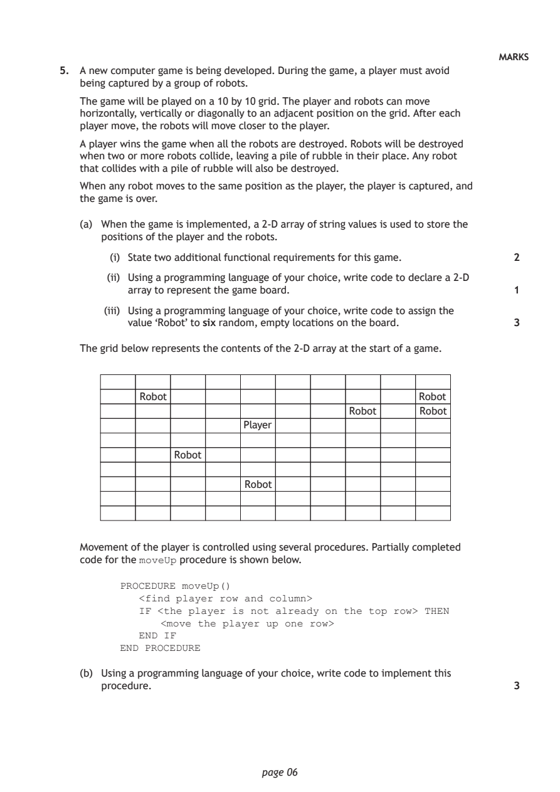
Selectable page text
MARKS
5. A new computer game is being developed. During the game, a player must avoid
being captured by a group of robots.
The game will be played on a 10 by 10 grid. The player and robots can move
horizontally, vertically or diagonally to an adjacent position on the grid. After each
player move, the robots will move closer to the player.
A player wins the game when all the robots are destroyed. Robots will be destroyed
when two or more robots collide, leaving a pile of rubble in their place. Any robot
that collides with a pile of rubble will also be destroyed.
When any robot moves to the same position as the player, the player is captured, and
the game is over.
(a) When the game is implemented, a 2‑D array of string values is used to store the
positions of the player and the robots.
(i) State two additional functional requirements for this game. 2
(ii) Using a programming language of your choice, write code to declare a 2‑D
array to represent the game board. 1
(iii) Using a programming language of your choice, write code to assign the
value ‘Robot’ to six random, empty locations on the board. 3
The grid below represents the contents of the 2‑D array at the start of a game.
Robot Robot
Robot Robot
Player
Robot
Robot
Movement of the player is controlled using several procedures. Partially completed
code for the procedure is shown below.
moveUp
PROCEDURE moveUp()
<find player row and column>
IF <the player is not already on the top row> THEN
<move the player up one row>
END IF
END PROCEDURE
(b) Using a programming language of your choice, write code to implement this
procedure. 3
page 06PDF page 7
Selectable page text
[Turn over for next question
DO NOT WRITE ON THIS PAGE
page 07PDF page 8
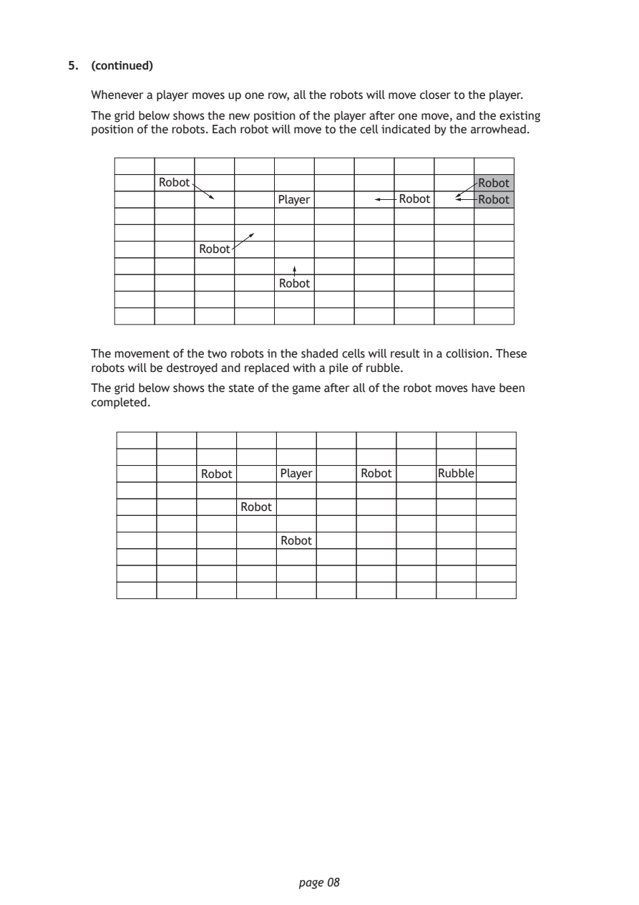
Selectable page text
5. (continued)
Whenever a player moves up one row, all the robots will move closer to the player.
The grid below shows the new position of the player after one move, and the existing
position of the robots. Each robot will move to the cell indicated by the arrowhead.
Robot Robot
Player Robot Robot
Robot
Robot
The movement of the two robots in the shaded cells will result in a collision. These
robots will be destroyed and replaced with a pile of rubble.
The grid below shows the state of the game after all of the robot moves have been
completed.
Robot Player Robot Rubble
Robot
Robot
page 08PDF page 9
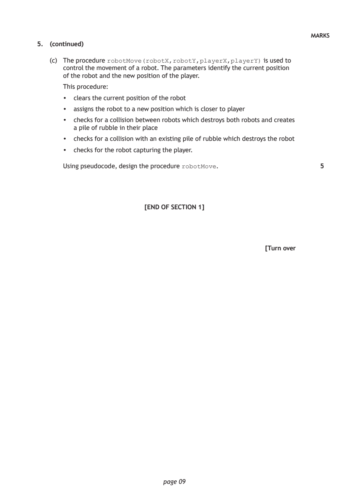
Selectable page text
MARKS
5. (continued)
(c) The procedure is used to
robotMove(robotX,robotY,playerX,playerY)
control the movement of a robot. The parameters identify the current position
of the robot and the new position of the player.
This procedure:
• clears the current position of the robot
• assigns the robot to a new position which is closer to player
• checks for a collision between robots which destroys both robots and creates
a pile of rubble in their place
• checks for a collision with an existing pile of rubble which destroys the robot
• checks for the robot capturing the player.
Using pseudocode, design the procedure . 5
robotMove
[END OF SECTION 1]
[Turn over
page 09PDF page 10

Selectable page text
[BLANK PAGE]
DO NOT WRITE ON THIS PAGE
page 10PDF page 11
Question 6Question 7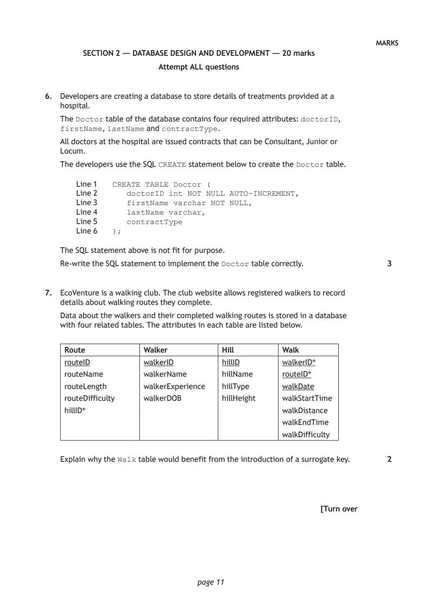
Selectable page text
MARKS
SECTION 2 — DATABASE DESIGN AND DEVELOPMENT — 20 marks
Attempt ALL questions
6. Developers are creating a database to store details of treatments provided at a
hospital.
The table of the database contains four required attributes: ,
Doctor doctorID
, and .
firstName lastName contractType
All doctors at the hospital are issued contracts that can be Consultant, Junior or
Locum.
The developers use the SQL statement below to create the table.
CREATE Doctor
Line 1
CREATE TABLE Doctor (
Line 2
doctorID int NOT NULL AUTO-INCREMENT,
Line 3
firstName varchar NOT NULL,
Line 4
lastName varchar,
Line 5
contractType
Line 6
);
The SQL statement above is not fit for purpose.
Re‑write the SQL statement to implement the table correctly. 3
Doctor
7. EcoVenture is a walking club. The club website allows registered walkers to record
details about walking routes they complete.
Data about the walkers and their completed walking routes is stored in a database
with four related tables. The attributes in each table are listed below.
Route Walker Hill Walk
routeID walkerID hillID walkerID*
routeName walkerName hillName routeID*
routeLength walkerExperience hillType walkDate
routeDifficulty walkerDOB hillHeight walkStartTime
hillID* walkDistance
walkEndTime
walkDifficulty
Explain why the table would benefit from the introduction of a surrogate key. 2
Walk
[Turn over
page 11PDF page 12
Question 8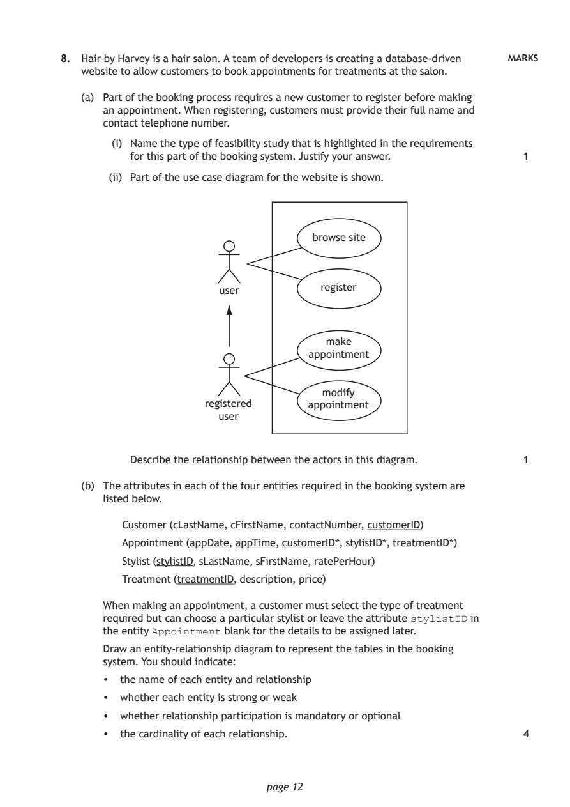
Selectable page text
8. Hair by Harvey is a hair salon. A team of developers is creating a database‑driven MARKS
website to allow customers to book appointments for treatments at the salon.
(a) Part of the booking process requires a new customer to register before making
an appointment. When registering, customers must provide their full name and
contact telephone number.
(i) Name the type of feasibility study that is highlighted in the requirements
for this part of the booking system. Justify your answer. 1
(ii) Part of the use case diagram for the website is shown.
browse site
user register
make
appointment
modify
registered appointment
user
Describe the relationship between the actors in this diagram. 1
(b) The attributes in each of the four entities required in the booking system are
listed below.
Customer (cLastName, cFirstName, contactNumber, customerID)
Appointment (appDate, appTime, customerID*, stylistID*, treatmentID*)
Stylist (stylistID, sLastName, sFirstName, ratePerHour)
Treatment (treatmentID, description, price)
When making an appointment, a customer must select the type of treatment
required but can choose a particular stylist or leave the attribute in
stylistID
the entity blank for the details to be assigned later.
Appointment
Draw an entity‑relationship diagram to represent the tables in the booking
system. You should indicate:
• the name of each entity and relationship
• whether each entity is strong or weak
• whether relationship participation is mandatory or optional
• the cardinality of each relationship. 4
page 12PDF page 13
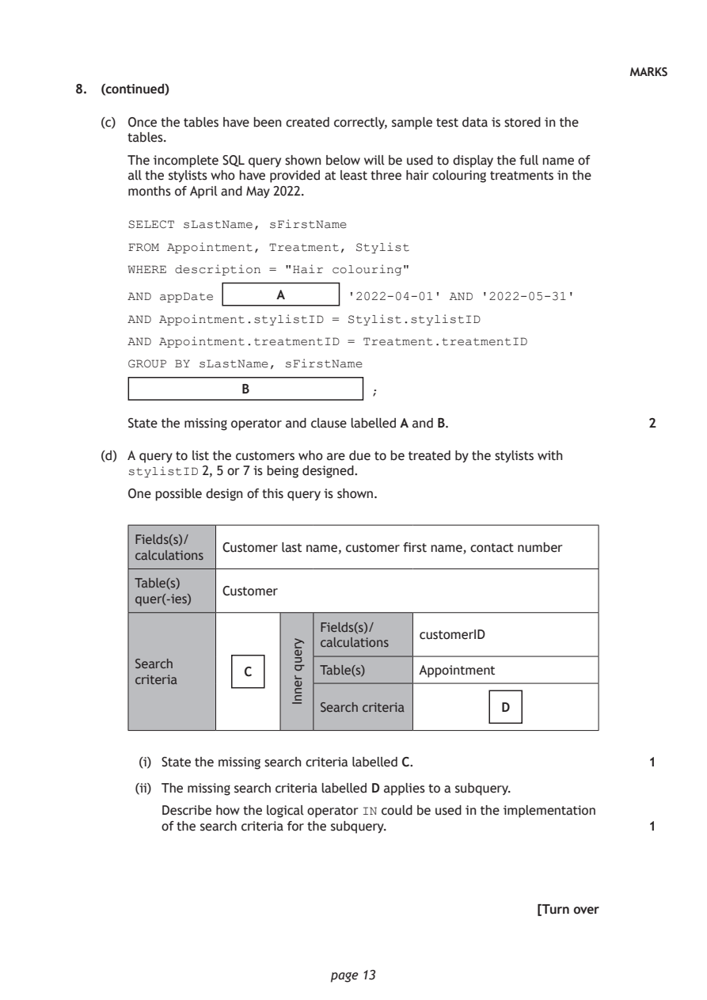
Selectable page text
MARKS
8. (continued)
(c) Once the tables have been created correctly, sample test data is stored in the
tables.
The incomplete SQL query shown below will be used to display the full name of
all the stylists who have provided at least three hair colouring treatments in the
months of April and May 2022.
SELECT sLastName, sFirstName
FROM Appointment, Treatment, Stylist
WHERE description = "Hair colouring"
A
AND appDate '2022-04-01' AND '2022-05-31'
AND Appointment.stylistID = Stylist.stylistID
AND Appointment.treatmentID = Treatment.treatmentID
GROUP BY sLastName, sFirstName
B
;
State the missing operator and clause labelled A and B.
(d) A query to list the customers who are due to be treated by the stylists with
2, 5 or 7 is being designed.
stylistID
One possible design of this query is shown.
Fields(s)/
Customer last name, customer first name, contact number
calculations
Table(s)
Customer
quer(‑ies)
Search
C
criteria
page 13
yreuq
rennI
2
Fields(s)/
customerID
calculations
Table(s) Appointment
Search criteria D
(i) State the missing search criteria labelled C. 1
(ii) The missing search criteria labelled D applies to a subquery.
Describe how the logical operator could be used in the implementation
IN
of the search criteria for the subquery. 1
[Turn overPDF page 14
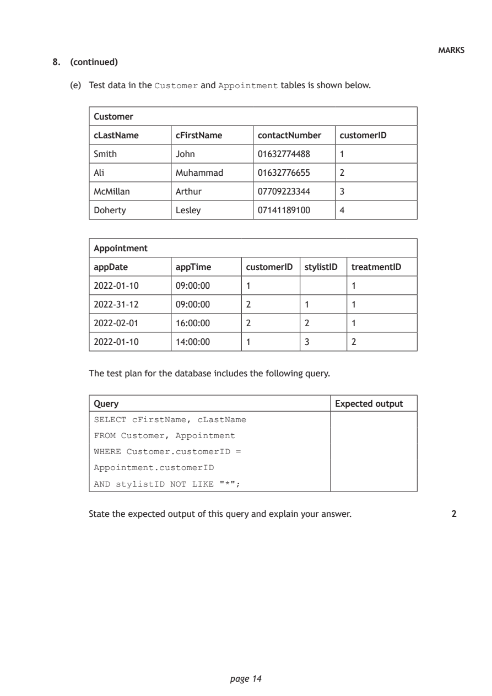
Selectable page text
MARKS
8. (continued)
(e) Test data in the and tables is shown below.
Customer Appointment
Customer
cLastName cFirstName contactNumber customerID
Smith John 01632774488 1
Ali Muhammad 01632776655 2
McMillan Arthur 07709223344 3
Doherty Lesley 07141189100 4
Appointment
appDate appTime customerID stylistID treatmentID
2022‑01‑10 09:00:00 1 1
2022‑31‑12 09:00:00 2 1 1
2022‑02‑01 16:00:00 2 2 1
2022‑01‑10 14:00:00 1 3 2
The test plan for the database includes the following query.
Query Expected output
SELECT cFirstName, cLastName
FROM Customer, Appointment
WHERE Customer.customerID =
Appointment.customerID
AND stylistID NOT LIKE "*";
State the expected output of this query and explain your answer. 2
page 14PDF page 15
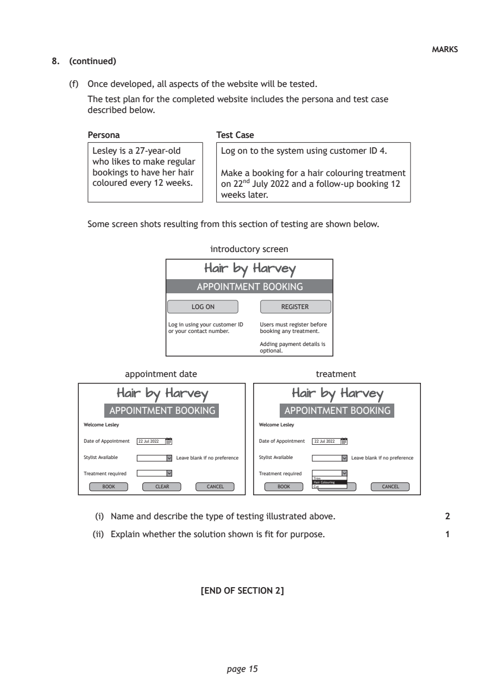
Selectable page text
MARKS
8. (continued)
(f) Once developed, all aspects of the website will be tested.
The test plan for the completed website includes the persona and test case
described below.
Persona Test Case
Lesley is a 27‑year‑old Log on to the system using customer ID 4.
who likes to make regular
bookings to have her hair Make a booking for a hair colouring treatment
coloured every 12 weeks. on 22nd July 2022 and a follow‑up booking 12
weeks later.
Some screen shots resulting from this section of testing are shown below.
introductory screen
Hair by Harvey
APPOINTMENT BOOKING
LOG ON REGISTER
Log in using your customer ID Users must register before
or your contact number. booking any treatment.
Adding payment details is
optional.
appointment date treatment
Hair by Harvey Hair by Harvey
APPOINTMENT BOOKING APPOINTMENT BOOKING
Welcome Lesley Welcome Lesley
Date of Appointment 22 Jul 2022 Date of Appointment 22 Jul 2022
Stylist Available Leave blank if no preference Stylist Available Leave blank if no preference
Treatment required Treatment required
Trim
Hair Colouring
BOOK CLEAR CANCEL BOOK CutCLEAR CANCEL
(i) Name and describe the type of testing illustrated above. 2
(ii) Explain whether the solution shown is fit for purpose. 1
[END OF SECTION 2]
page 15PDF page 16

Selectable page text
[BLANK PAGE]
DO NOT WRITE ON THIS PAGE
page 16PDF page 17
Question 9Question 10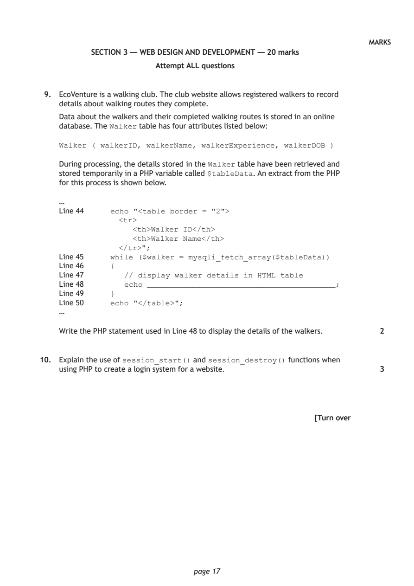
Selectable page text
MARKS
SECTION 3 — WEB DESIGN AND DEVELOPMENT — 20 marks
Attempt ALL questions
9. EcoVenture is a walking club. The club website allows registered walkers to record
details about walking routes they complete.
Data about the walkers and their completed walking routes is stored in an online
database. The table has four attributes listed below:
Walker
Walker ( walkerID, walkerName, walkerExperience, walkerDOB )
During processing, the details stored in the table have been retrieved and
Walker
stored temporarily in a PHP variable called . An extract from the PHP
$tableData
for this process is shown below.
…
Line 44
echo "<table border = "2">
<tr>
<th>Walker ID</th>
<th>Walker Name</th>
</tr>";
Line 45
while ($walker = mysqli_fetch_array($tableData))
Line 46
{
Line 47
// display walker details in HTML table
Line 48 _______________________________________________
echo ;
Line 49
}
Line 50
echo "</table>";
…
Write the PHP statement used in Line 48 to display the details of the walkers. 2
10. Explain the use of and functions when
session_start() session_destroy()
using PHP to create a login system for a website. 3
[Turn over
page 17PDF page 18
Question 11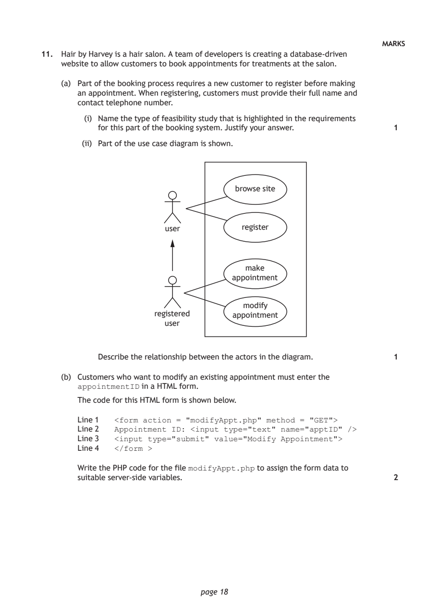
Selectable page text
MARKS
11. Hair by Harvey is a hair salon. A team of developers is creating a database‑driven
website to allow customers to book appointments for treatments at the salon.
(a) Part of the booking process requires a new customer to register before making
an appointment. When registering, customers must provide their full name and
contact telephone number.
(i) Name the type of feasibility study that is highlighted in the requirements
for this part of the booking system. Justify your answer. 1
(ii) Part of the use case diagram is shown.
browse site
user register
make
appointment
modify
registered appointment
user
Describe the relationship between the actors in the diagram. 1
(b) Customers who want to modify an existing appointment must enter the
in a HTML form.
appointmentID
The code for this HTML form is shown below.
Line 1
<form action = "modifyAppt.php" method = "GET">
Line 2
Appointment ID: <input type="text" name="apptID" />
Line 3
<input type="submit" value="Modify Appointment">
Line 4
</form >
Write the PHP code for the file to assign the form data to
modifyAppt.php
suitable server‑side variables. 2
page 18PDF page 19
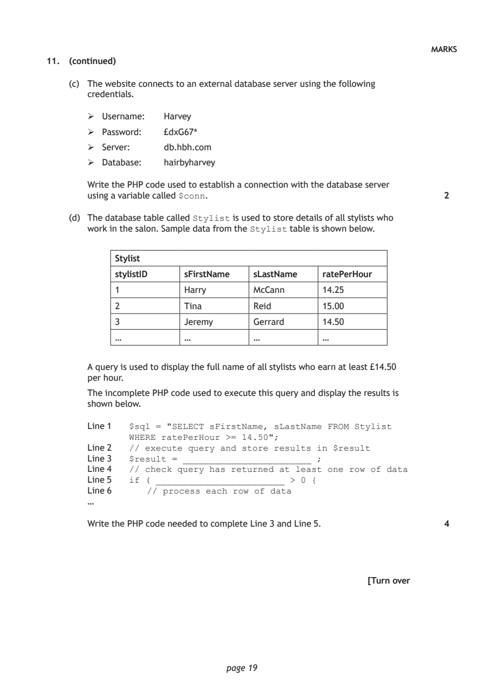
Selectable page text
MARKS
11. (continued)
(c) The website connects to an external database server using the following
credentials.
¾ Username: Harvey
¾ Password: £dxG67*
¾ Server: db.hbh.com
¾ Database: hairbyharvey
Write the PHP code used to establish a connection with the database server
using a variable called . 2
$conn
(d) The database table called is used to store details of all stylists who
Stylist
work in the salon. Sample data from the table is shown below.
Stylist
Stylist
stylistID sFirstName sLastName ratePerHour
1 Harry McCann 14.25
2 Tina Reid 15.00
3 Jeremy Gerrard 14.50
… … … …
A query is used to display the full name of all stylists who earn at least £14.50
per hour.
The incomplete PHP code used to execute this query and display the results is
shown below.
Line 1
$sql = "SELECT sFirstName, sLastName FROM Stylist
WHERE ratePerHour >= 14.50";
Line 2
// execute query and store results in $result
Line 3
$result = ________________________ ;
Line 4
// check query has returned at least one row of data
Line 5
if ( ________________________ > 0 {
Line 6
// process each row of data
…
Write the PHP code needed to complete Line 3 and Line 5. 4
[Turn over
page 19PDF page 20
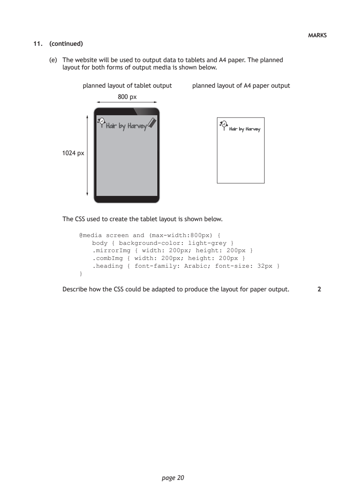
Selectable page text
MARKS
11. (continued)
(e) The website will be used to output data to tablets and A4 paper. The planned
layout for both forms of output media is shown below.
planned layout of tablet output planned layout of A4 paper output
800 px
Hair by Harvey
Hair by Harvey
1024 px
The CSS used to create the tablet layout is shown below.
@media screen and (max-width:800px) {
body { background-color: light-grey }
.mirrorImg { width: 200px; height: 200px }
.combImg { width: 200px; height: 200px }
.heading { font-family: Arabic; font-size: 32px }
}
Describe how the CSS could be adapted to produce the layout for paper output. 2
page 20PDF page 21
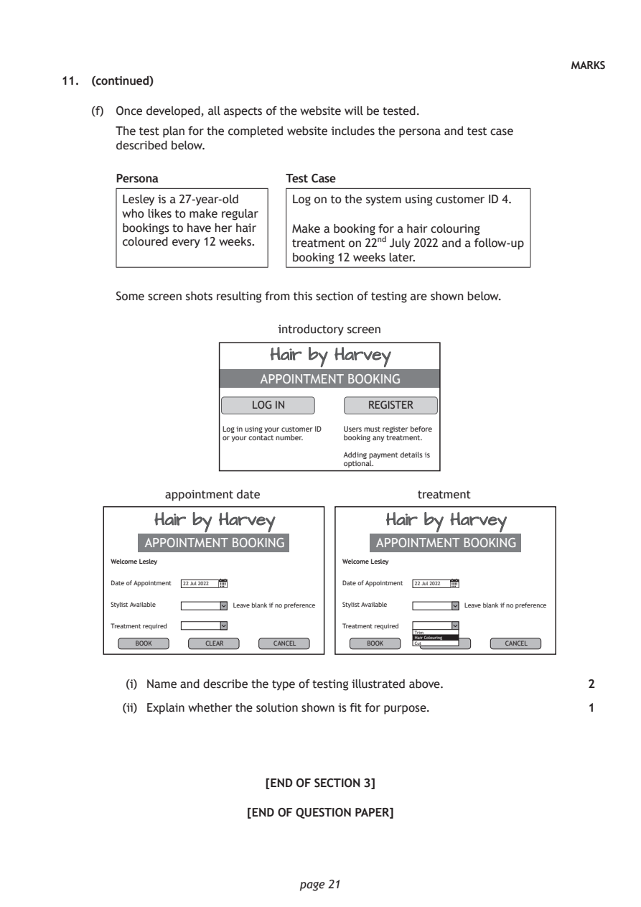
Selectable page text
MARKS
11. (continued)
(f) Once developed, all aspects of the website will be tested.
The test plan for the completed website includes the persona and test case
described below.
Persona Test Case
Lesley is a 27‑year‑old Log on to the system using customer ID 4.
who likes to make regular
bookings to have her hair Make a booking for a hair colouring
coloured every 12 weeks. treatment on 22nd July 2022 and a follow‑up
booking 12 weeks later.
Some screen shots resulting from this section of testing are shown below.
introductory screen
Hair by Harvey
APPOINTMENT BOOKING
LOG IN REGISTER
Log in using your customer ID Users must register before
or your contact number. booking any treatment.
Adding payment details is
optional.
appointment date treatment
Hair by Harvey Hair by Harvey
APPOINTMENT BOOKING APPOINTMENT BOOKING
Welcome Lesley Welcome Lesley
Date of Appointment 22 Jul 2022 Date of Appointment 22 Jul 2022
Stylist Available Leave blank if no preference Stylist Available Leave blank if no preference
Treatment required Treatment required
Trim
Hair Colouring
BOOK CLEAR CANCEL BOOK CutCLEAR CANCEL
(i) Name and describe the type of testing illustrated above. 2
(ii) Explain whether the solution shown is fit for purpose. 1
[END OF SECTION 3]
[END OF QUESTION PAPER]
page 21PDF page 22

Selectable page text
[BLANK PAGE]
DO NOT WRITE ON THIS PAGE
page 22PDF page 23
Selectable page text
[BLANK PAGE]
DO NOT WRITE ON THIS PAGE
page 23PDF page 24

Selectable page text
[BLANK PAGE]
DO NOT WRITE ON THIS PAGE
page 24